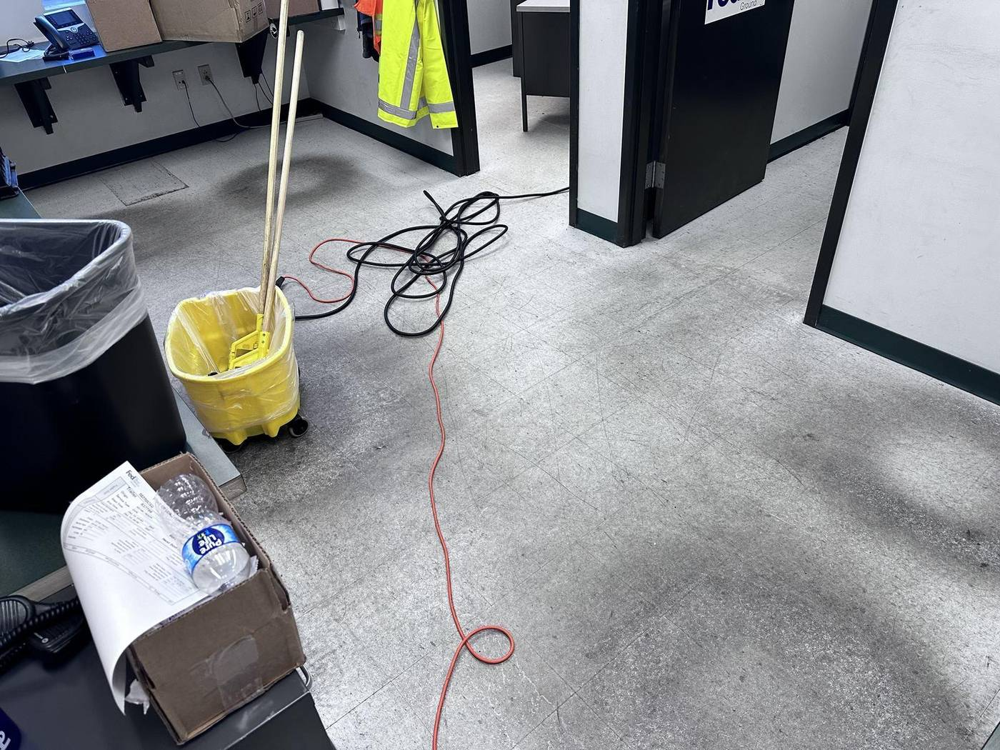
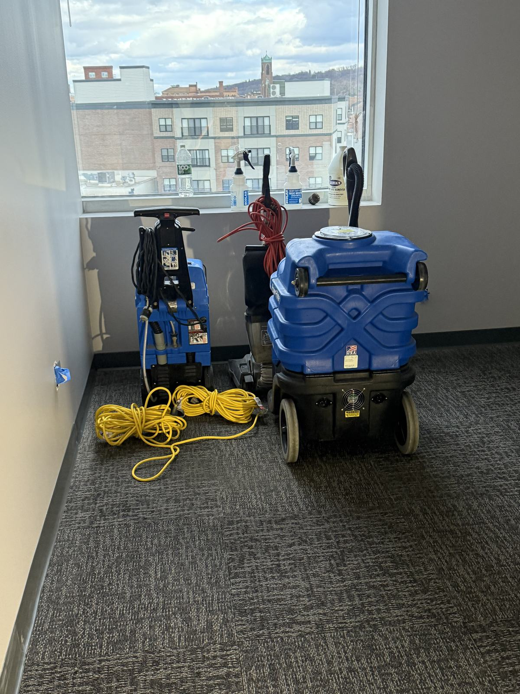
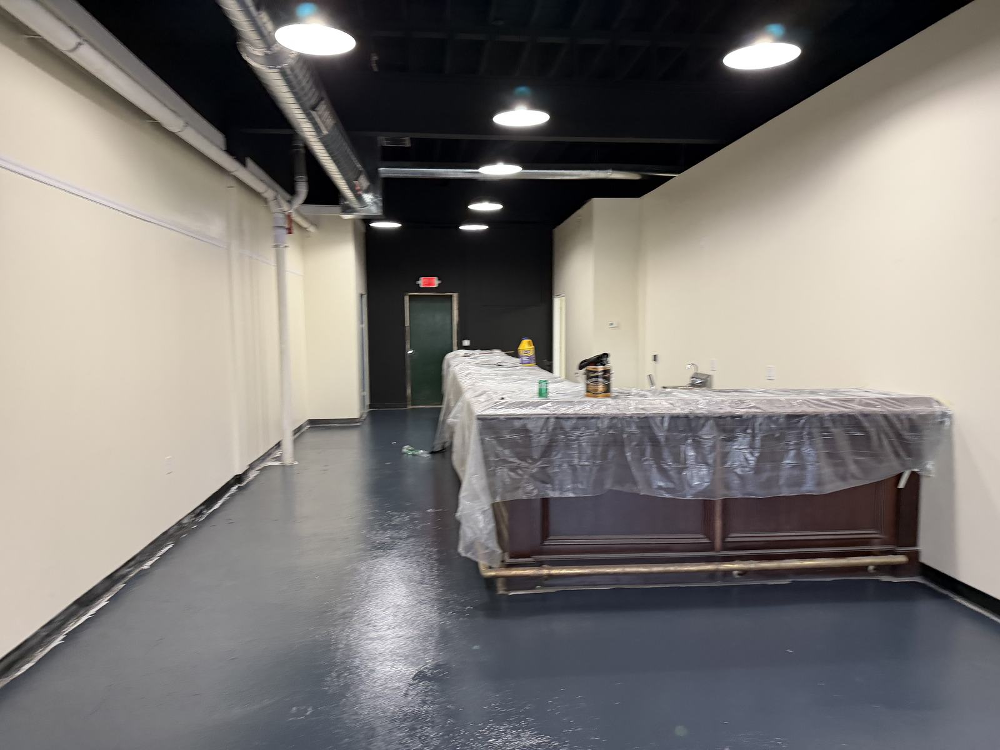
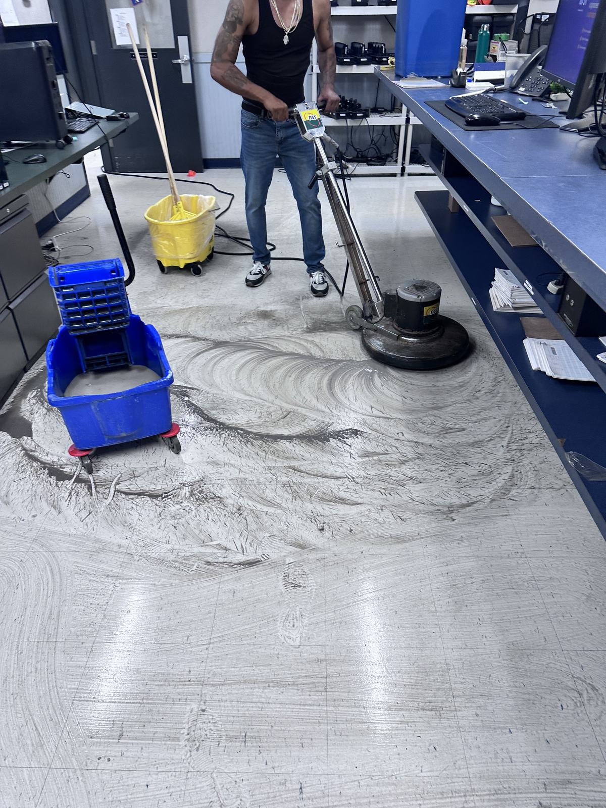
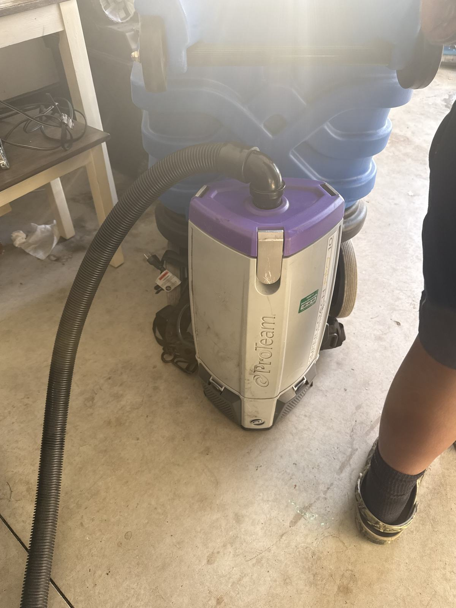

Office cleaning · Albany & the Capital Region
Office cleaning in Albany that's done before you open.
Professional suites, multi-floor corporate offices, law and accounting firms, coworking spaces. Cleaned after hours by the same crew, to a written checklist.

What office cleaning covers
The standard office scope. We tailor it room by room after walking your space.
How we clean an office
Reception and lobby. The first thing a client sees. Entry glass, the front desk, seating and the floor get attention every visit, because smudged doors and a gritty entry mat undo the rest of the office.
Workstations and private offices. Dusting of open surfaces, phones and monitors wiped per your scope, trash out, carpet vacuumed. We don't move papers, open drawers or touch anything marked off-limits.
Conference rooms. Tables wiped, chairs squared, whiteboards cleaned if you want them cleaned, and the room reset so the 8 a.m. meeting walks into a clean space.
Kitchens and breakrooms. Counters, sinks, tables and appliance fronts cleaned and disinfected; microwave and refrigerator interiors on a set schedule, so nothing is left to "whoever gets to it".
Restrooms. Cleaned, disinfected and restocked every visit. Fixtures descaled and floors machine-scrubbed on a longer cycle.
Floors. Nightly vacuuming and mopping, plus periodic carpet extraction and hard-floor burnishing or recoat by our floor care crew.
Your office is part of your pitch
Clients and recruits form an opinion of your business in the first minute in your office. Overflowing bins, dusty ledges and a restroom out of paper say something about how you run things, fairly or not. For accounting firms, law offices, agencies and anyone who hosts clients, a consistently clean office is a quiet part of the sales process.
It also matters to the people who work there. Shared keyboards, door handles, coffee stations and restrooms are where germs move through an office. Regular high-touch disinfection and a clean breakroom won't make headlines, but your staff notices when it slips.
Some offices need a visible presence during the day to keep restrooms, lobbies and kitchens right through heavy traffic — that's day-porter service. Most prefer a crew that works after the last person leaves. We do both, and we'll recommend the right mix after walking your space. For multi-tenant buildings and larger programs, see our janitorial services; for medical and dental suites, see medical office cleaning.
Built for how your office actually works
Law, accounting and financial offices. Client-facing reception, private offices with confidential files, and conference rooms that must be ready every morning. Crews follow your rules for what can and can't be touched.
Agencies, tech and coworking. Open plans, shared kitchens that take a beating, phone booths and lounges. Coworking spaces often add a daytime porter to keep common areas right between members.
Multi-tenant office buildings. Common areas, lobbies, elevators and restrooms for the building, with individual suites on their own scopes. Property managers get one vendor and one invoice.
Switching from another cleaner? Tell us what went wrong. The walkthrough is where we fix it in writing: missed tasks become line items with frequencies, and you get one contact who answers when something slips.
Getting started
Free walkthrough
We walk the office, ask how it's used, and note what bothers you about the current cleaning.
Checklist & quote
A written checklist by room and frequency with a real number — plus COI and W-9 — usually within 24 hours.
First clean
A thorough first visit to reset the space, then the regular schedule with the same crew every time.
From our own job sites



Cleaning plus the small fixes
A burnt-out light, a running toilet, a dented wall behind the conference-room door: most office cleaners note it and move on. Our crews work alongside the TPS Pro maintenance team, so small repairs get scheduled and fixed under the same contract instead of turning into another vendor search.
We're bonded and insured, with a COI and W-9 in your inbox before day one. We've served Albany and the Capital Region since 2019, and we answer the phone 24/7 — including the morning after a leak or a break-in when the office needs to be ready by nine.
Rated 4.6 on Google
Thirty reviews from Capital Region businesses, property managers and owners. Read them unedited on Google.
Read our Google reviews
More for your building
Office cleaning near you:
Office cleaning questions, answered
How often should an office be professionally cleaned?
Most Albany offices do best with cleaning anywhere from once a week to nightly, depending on headcount, foot traffic, and whether you host clients. We recommend a frequency during a free walkthrough and adjust as your needs change. Our cleaning frequency guide explains how we decide.
Do you clean after hours so we're not disrupted?
Yes. We usually clean in the evening after your team leaves, or overnight, so the office is ready at open and your workday is never interrupted. Day-porter coverage is available if you need someone on site during business hours.
Do you bring your own supplies and equipment?
Yes. TPS Pro supplies the equipment and cleaning products. We can also stock your restroom and breakroom consumables if you'd like that handled too.
Can you clean around sensitive documents and equipment?
Yes. Crews don't move papers on desks, don't open drawers or files, and wipe electronics only as your scope allows. Keys and alarm codes are issued only to the crew assigned to your office.
Can you also handle minor repairs around the office?
Yes. TPS Pro also provides property maintenance, so a clogged sink, a scuffed wall, a paint touch-up or floor care come from the same accountable team.
Get an office cleaning quote
Tell us about your office. We'll walk it, recommend a schedule and send a real number — no commitment.
- Bonded & insured — W-9 and COI before day one
- Our own crews, not a revolving door of subcontractors
- Procurement team? Get our vendor packet